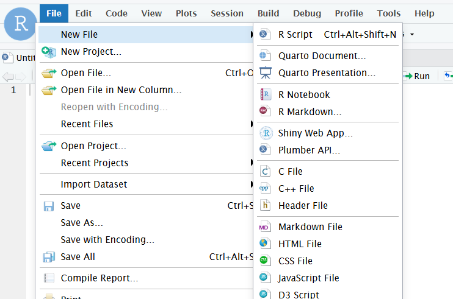
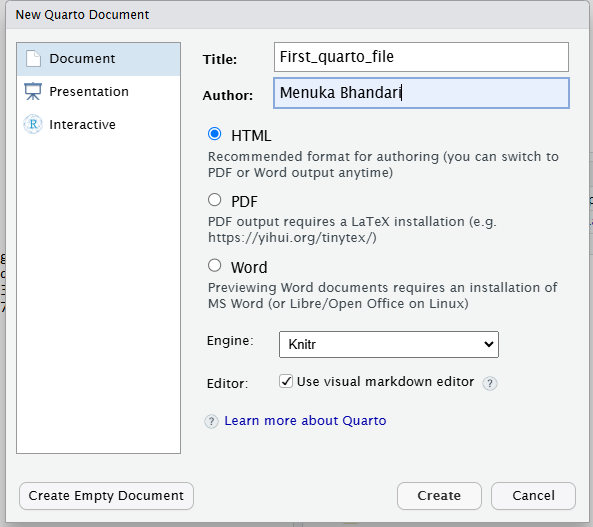
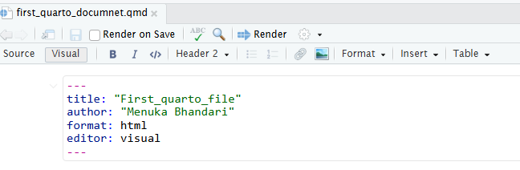
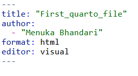
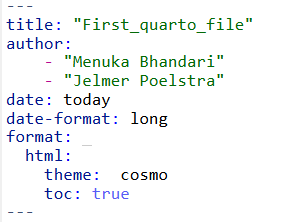
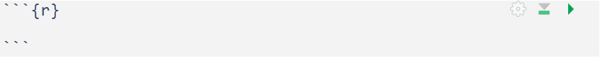
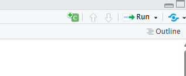
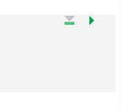

![]()
---
title: " R : Quarto"
subtitle: "Week 12"
author:
- Menuka Bhandari
date: today
date-format: "YYYY-MM-DD"
format:
html:
theme: darkly
---R + Markdown with Quarto
Week 12 – Lecture A
1 Introduction
1.1 Overview
This session introduces the basics of Quarto - its three components YAML header, code chunks and text. You will learn to create Quarto documents, use several options to display/hide codes and figures, and render your Quarto source document to an output HTML document.
1.2 Learning goals
In this session, you will learn:
- Basics of Quarto (syntax and formats)
- How to create and render a Quarto document in RStudio
- Understand three components of Quarto ; YAML header, code chunks and text
2 Quarto
Quarto is an extension of Markdown that allows to combine prose, code, and results1. Quarto is not limited to a single programming language but can run R, Python, Julia and Observable code. Here, we will focus on using Quarto in RStudio with R.
Quarto documents are reproducible and support different output formats such as PDFs, Microsoft Word files, slide decks (presentations) and many more.
Advantages of using Quarto:
- Communicate with your collaborator: It includes code, results and steps/narrative in a single document
- Supports multi-format outputs such as HTML, PDF, Markdown, websites and more
- Reproducibility of research
Quarto is integrated into RStudio and you don’t need to install a package or anything else for basic usage.
2.1 Open a new Quarto document in Rstudio
A Quarto file is a plain text file with a .qmd extension. To create a new Quarto document: File > New File > Quarto Document

This will open a new window with several options. We can select the Quarto outputs such as Documents, Presentation, interactive in different formats. For example, for documents, we can pick HTML, PDF or Word format. Here, we will select Document and HTML format.

This will create an new unamed Untitled.qmd file. Let’s rename it, by going to File, Save As and then save it as quarto_intro.qmd.
3 Rendering Quarto documents
Rendering a Quarto document converts the .qmd document to the requested format (html/pdf or any other format). During rendering, Quarto document (.qmd) is first processed using knitr, which executes code in the documents and produces a plain Markdown file, and then convert to the final format using pandoc.
So, while rendering, all code chunks are executed and their output is embedded in the final document along with the text. However, if there are any codes that produces error, your document will not be rendered.
To render a Quarto document, click on the Render button:

You can also use a keyboard shortcut to render: Ctrl-Shift-K (Windows) or Cmd-Shift-K (Mac).
There is an option to render automatically when you save. I would not personally prefer to click it because if you are doing some computationally intensive task, it will keep rendering.
View the output document: You can view the output either in a separate window, or in the Viewer pane. The gear icon next to the Render button can be used to change output viewing settings.
4 Components of Quarto documents
A Quarto document has the following three main components:
- The YAML header surrounded by (
---) - Code chunk surrounded by (```{r})
- Regular text with Markdown formatting
We’ll go over these one-by-one now.
4.1 YAML header
The header for the Quarto document is written in YAML language. It allows to specify themes, formats, executable options and many more. Additionally, it consists of series of metadata such as title, author, date etc. You can think of YAML header as the settings of the Quarto document on how to process and present your document.
It is surrounded by (---), at the top of the Quarto document. A simple example of YAML header is shown below:

We can add some additional contents to the YAML header such as authors, date, table of content and set the theme:

Some of the additional options for the YAML header can be found here.
Tip
Project level YAML: YAML header can be specified at the project level in a file named.
_quarto.ymlin the root directory of your project. This file can be used to set default options for all Quarto documents in the project. More information about project level YAML can be found here.Document level YAML: YAML header can be specified at the document level at the top of each Quarto document. This file can be used to set options specific to that document.
YAML mapping
The YAML header starts and ends with three hyphens (---). Each key-value pair should be on a new line, with a colon (:) followed by a space separating the key and value. If a value is a nested mapping, indent the nested pairs typically using two spaces per level. Keys are case-sensitive, and values can be strings, numbers, booleans, lists, or nested lists. Strings with special characters should be enclosed in quotes.
YAML Sequences
A key sets of ordered variables can be specified in YAML sequences in two different ways:
- Inline syntax: Comma-separated values enclosed in square brackets (
[ ]). - Block syntax: Each item on a new line, preceded by a hyphen (
-). We saw example of block syntax this in the above fig

Quotes
In YAML, strings without special characters do not require quotes. In the above examples, although I kept the quotes around the title and author names, it is not necessary. However, quotes are necessary when string contains special characters (e.g. #, :, etc.).
Tip
The hash symbol (#) indicates the start of a comment, which is ended by the end of the line. Colon is used in YAML headers to assign values to keys.
Exercise:
Change the YAML header of your Quarto document to include the following:
- Title, subtitle, Author
- Add
date: use the formatYYYY-MM-DD - Change the
themetodarkly: Different themes are found here
Click for the solution
4.2 Code chunks
Code chunks are where you write (R) code that can be executed. These are very similar to the code blocks you are already used to in plain Markdown files, except that to “enable executability”, you enclose the language indicator (r) in curly braces ({r}):

Code chunks can be added in three different ways in RStudio:
Keyboard shortcuts:
Ctrl-Alt-I(Windows) orCmd-Option-I(Mac)Typing it manually ```
{r}followed by three back ticks ``` at the end of the chunkClicking the insert button in the toolbar and select R:

Chunk options
Several options can be added to your code chunk to customize the output of code. Chunk options can be either written directly inside the curly braces or by using #| (YAML syntax) before the code chunk where each #| line sets one option. Some of the commonly used chunk options are:
echo: FALSEruns your code chunk, displays output, but does not display code in your final doc (this is useful if you want to show a figure but not the code used to create it)eval: FALSEdoes not run your code, but does display it in your final docinclude: FALSEruns your code but does not display the code or its output in your final doc
Additional chunk options are available below:
warning: FALSEprevents warnings from showing up in your final docfig.cap:“Your figure caption” will allow you to set a figure captionfig-show=hideto hide the figures
More chunk options can be found here.
# Example code chunk
2*2[1] 42*3[1] 6Global vs. chunk-specific options
If the default code chunk settings don’t fit your needs, you can change them for the whole document in the YAML section under execute:. For example, if you don’t want to show your R code to your readers, you can set echo: false which hides all code by default. If you later want to show the code for a specific chunk, you can turn it back on just for that chunk using echo: true.
NoteChunk labels
Chunks can be labelled in Quarto using #| label: chunk-name before the code chunk. The chunk name should be unique and cannot contain spaces.
Advantages of labeling chunks:
- It helps to refer the chunk in other places such as cross-referencing.
- You can set up a network of certain chunks not to rerun to avoid the computational time.
2 + 3[1] 55 * 6[1] 30Running the code chunk
There are several different options to run individual code chunks:
- Click the green play button
- Keyboard shortcut:
Ctrl-Shift-Enter(Windows) orCmd-Shift-Enter(Mac) - Place the cursor inside the chunk and press
Ctrl-Enter(Windows) orCmd-Enter(Mac)
Additional notes:
- Just like in regular R code, you can include comments inside the code chunk using the
#symbol. - Triangle sign with a line below execute all the code chunks before the current chunk.
- Triangle sign facing towards right (similar to play button) runs the current chunk.

Exercise
Add the code chunks in the Quarto document to do the following:
- Install and load the
tidyversepackage. Use the chunk option to hide the warnings and messages while loading the package. - In the second chunk install and load package
ggplot2 - Read the documentation of
ggplot2and create a simple scatter plot using themtcarsdataset withwton x-axis andmpgon y-axis.
Click for the solution
library(tidyverse)
library(ggplot2)
ggplot(mtcars, aes(wt, mpg)) +
geom_point()
4.3 Markdown text
The “default text” in Quarto documents is Markdown, unlike in R scripts, where everything is considered code until commented out by #. Therefore, you can directly write regular text outside the code chunks. Quarto text syntax is based on Pandoc Markdown which is similar to original Markdown syntax we discussed in Week02
Headings
Headings are created by using # followed by a space and the heading. Quarto supports six levels of headings.
Inline code- The R code can be directly added in the text using single back ticks followed by `r` such as 4 which will produce 4 in the output document.
5 Source editor vs. Visual editor
Source editor : The source editor in RStudio is is the default text editor for editing Quarto documents (.qmd files). You type everything yourself - the text, the code chunks, and the YAML settings. It gives you full control but requires knowing some Markdown and Quarto syntax. It’s good for users who like to see and control the exact code behind the document.
Visual Editor : The Quarto visual editor within RStudio provides a What You See Is What You Mean (WYSIWYM) interface for authoring Quarto documents (.qmd files). The visual editor is easier to use for the users with Microsoft Word or Google Docs background. You can format text, add images, and see how your document will look as you write. It’s great for beginners or anyone who prefers a simple, visual writing style.
You can switch between the visual editor and source editor by clicking on the Visual and Source buttons at the top right corner of the RStudio window.
6 Practice
- Create a PDF by saving the Quarto(.qmd) file you created to save your script.
- Add the following to the YAML header of your Quarto document:
- Author name
- Date
- Table of contents
- Theme
- Load the package
palmerpenguinsinstalled inweek11exercise and save thepenguinsdata in a object called penguin_data. - Create a scatter plot of
flipper_length_mm(x-axis) andbody_mass_g(y-axis) colored byspeciesusingggplot2package. - Customize the figure by adding figure caption, changing the figure dimensions (height and width) and aligning it to the center.
- Add a text section explaining the figure you created above.
Footnotes
It is the next-generation version of R Markdown, in case you have heard of that.↩︎